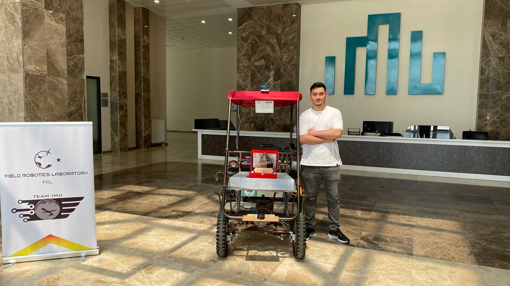
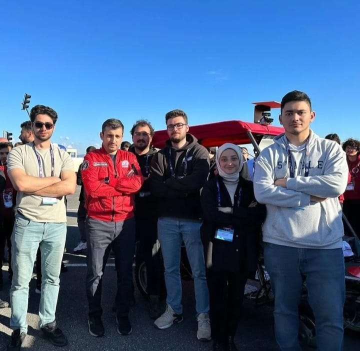
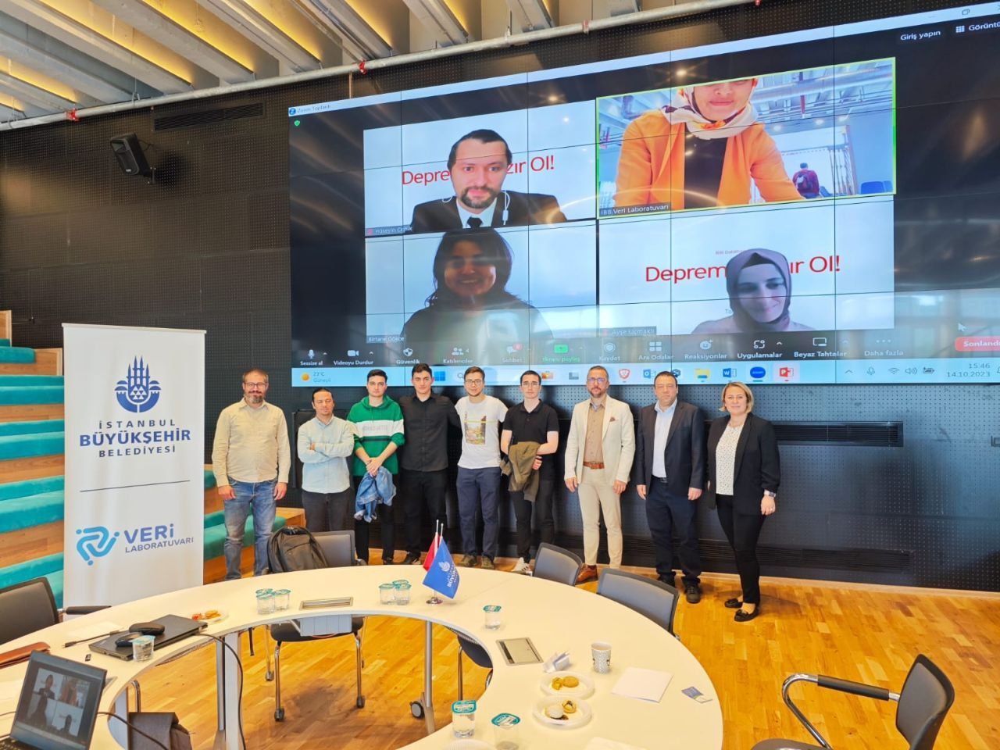
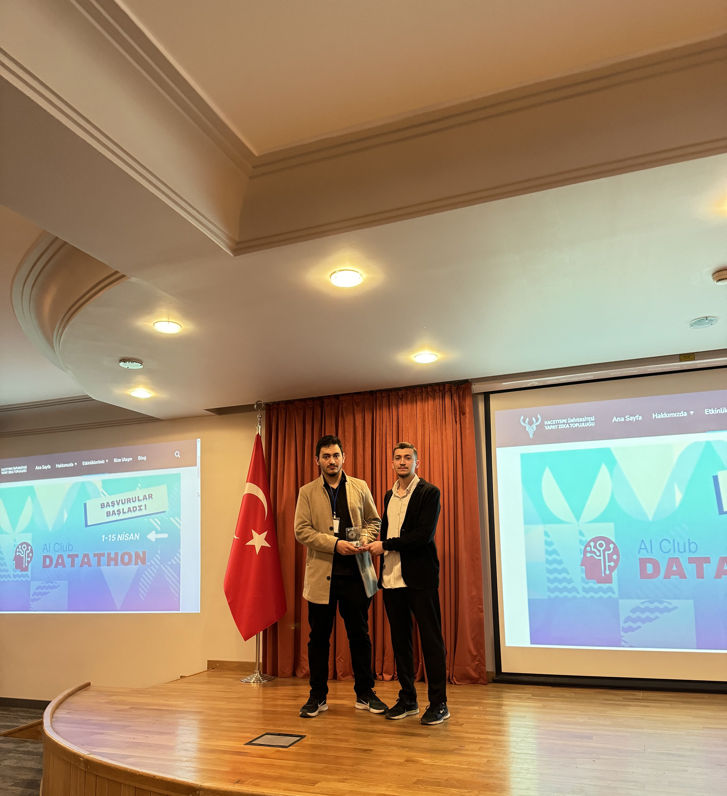

BEN KİMİM
Ben Serhat KILIÇ. İstanbul Medeniyet Üniversitesi Bilgisayar Mühendisliği 4.sınıf öğrencisiyim.
Yapay zeka, makine öğrenmesi,veri bilimi ve siber güvenlik alanları üzerinde çalışmalar yapmakta ve kendimi bu alanlarda geliştirmeye çalışmaktayım.
ÖDÜLLER VE BAŞARILAR
TEKNOFEST 2024 ULAŞIMDA YAPAY ZEKA 3.LÜĞÜ
Takımım CyberBros bünyesinde 2024 Teknofest Ulaşımda Yapay Zeka yarışmasında Üçüncülük ödülünü almaya hak kazandık.

ROBOTAKSİ 2023 EN ÖZGÜN YAZILIM ÖDÜLÜ
TEAM İMÜ AV bünyesinde 2023 Yapay Zeka ile Şerit Takip Segmentasyon kısmını üstlendiğim yarışmada En Özgün Yazılım Ödülü'nü almaya hak kazandık.
 İBB 2023 DATATHON 2.LİĞİ
Cyberbros ekibi olarak katıldığımız 2023 İBB Datathon'unda 2. olduk.
HACETTEPE ÜNİVERSİTESİ 2024 AI DATATHON 3.LÜĞÜ
Dört adet kurgusal borsa değerinin açılış-kapanış, en yüksek-en düşük değerlerinin tahminlemesini yapan bir model geliştirip finalist olarak yarıştım ve 3.olmaya hak kazandım.
